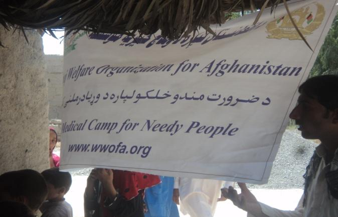
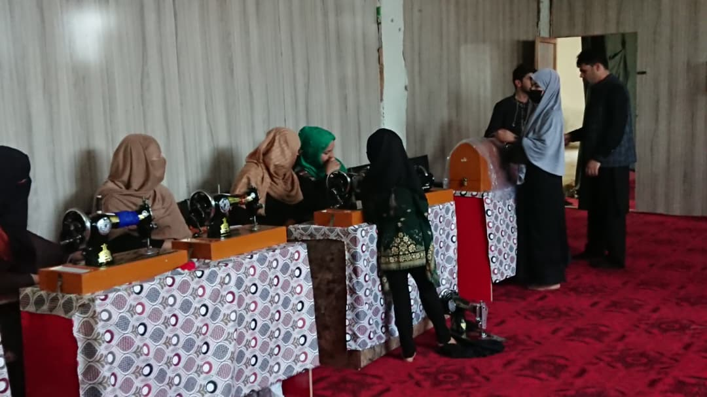

A look at the programs WWOA has delivered on the ground — in healthcare, vocational training, and psychosocial support.
Conducted September 8, 2014


Ahead of the camp, WWOA conducted an assessment survey (August 30, 2014) in the Upper–Mirzakhail displaced settlement, identifying 200–250 displaced people — mostly from Kunar province — living among a host population of 1,200–1,400. The survey found widespread seasonal illness, limited access to clean water and sanitation, and a lack of medical care.
In response, WWOA partnered with the district's public health department, local administration, and community elders to deliver a free medical camp — providing checkups, treatment, and medicine entirely free of charge, alongside on-the-spot hygiene education.
Common conditions treated included diarrhea, pneumonia, chest infections, coughs, sore throat, body aches, and bacterial skin infections. All 258 attendees also took part in hygiene education sessions. The camp was approved and led by Engineer Imam Jan Stanikzai, CEO & President of WWOA, with a team of doctors, a pharmacist, hygiene educators, and logistics support drawn from both WWOA staff and the public health department.

WWOA provided a three-month vocational sewing training program for 10 women in Afshar, designed to build practical, income-generating skills.
Over the course of the program, participants learned sewing and tailoring techniques that enabled them to earn an income and better support themselves and their families — turning a short-term training into a lasting, practical skill.


WWOA provided three mental health and wellbeing sessions for women who had stopped going to work — designed to strengthen participants' confidence and self-esteem, and to promote positive coping strategies.
The sessions were held in three groups: two with 10 participants each, and a third with 27 participants, reaching 47 women in total.
These are the first documented chapters of WWOA's work — and with your support, there will be many more.
Donate Now